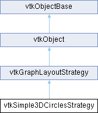

|
Etrek
|
|
Etrek
|
places vertices on circles in 3D More...
#include <vtkSimple3DCirclesStrategy.h>

Public Types | |
| enum | { FixedRadiusMethod = 0 , FixedDistanceMethod = 1 } |
Public Member Functions | |
| vtkTypeMacro (vtkSimple3DCirclesStrategy, vtkGraphLayoutStrategy) | |
| void | PrintSelf (ostream &os, vtkIndent indent) override |
| void | Layout () override |
| void | SetGraph (vtkGraph *graph) override |
| vtkSetMacro (Method, int) | |
| vtkGetMacro (Method, int) | |
| vtkSetMacro (Radius, double) | |
| vtkGetMacro (Radius, double) | |
| vtkSetMacro (Height, double) | |
| vtkGetMacro (Height, double) | |
| vtkSetVector3Macro (Origin, double) | |
| vtkGetVector3Macro (Origin, double) | |
| virtual void | SetDirection (double dx, double dy, double dz) |
| virtual void | SetDirection (double d[3]) |
| vtkGetVector3Macro (Direction, double) | |
| virtual void | SetMarkedStartVertices (vtkAbstractArray *_arg) |
| vtkGetObjectMacro (MarkedStartVertices, vtkAbstractArray) | |
| virtual void | SetMarkedValue (vtkVariant _arg) |
| virtual vtkVariant | GetMarkedValue () |
| vtkSetMacro (ForceToUseUniversalStartPointsFinder, vtkTypeBool) | |
| vtkGetMacro (ForceToUseUniversalStartPointsFinder, vtkTypeBool) | |
| vtkBooleanMacro (ForceToUseUniversalStartPointsFinder, vtkTypeBool) | |
| vtkSetMacro (AutoHeight, vtkTypeBool) | |
| vtkGetMacro (AutoHeight, vtkTypeBool) | |
| vtkBooleanMacro (AutoHeight, vtkTypeBool) | |
| vtkSetMacro (MinimumRadian, double) | |
| vtkGetMacro (MinimumRadian, double) | |
| virtual void | SetMinimumDegree (double degree) |
| virtual double | GetMinimumDegree () |
| virtual void | SetHierarchicalLayers (vtkIntArray *_arg) |
| vtkGetObjectMacro (HierarchicalLayers, vtkIntArray) | |
| virtual void | SetHierarchicalOrder (vtkIdTypeArray *_arg) |
| vtkGetObjectMacro (HierarchicalOrder, vtkIdTypeArray) | |
| Public Member Functions inherited from vtkGraphLayoutStrategy | |
| vtkTypeMacro (vtkGraphLayoutStrategy, vtkObject) | |
| virtual void | Initialize () |
| virtual int | IsLayoutComplete () |
| virtual void | SetWeightEdges (bool state) |
| vtkGetMacro (WeightEdges, bool) | |
| virtual void | SetEdgeWeightField (const char *field) |
| vtkGetStringMacro (EdgeWeightField) | |
| Public Member Functions inherited from vtkObject | |
| vtkBaseTypeMacro (vtkObject, vtkObjectBase) | |
| virtual void | DebugOn () |
| virtual void | DebugOff () |
| bool | GetDebug () |
| void | SetDebug (bool debugFlag) |
| virtual void | Modified () |
| virtual vtkMTimeType | GetMTime () |
| void | RemoveObserver (unsigned long tag) |
| void | RemoveObservers (unsigned long event) |
| void | RemoveObservers (const char *event) |
| void | RemoveAllObservers () |
| vtkTypeBool | HasObserver (unsigned long event) |
| vtkTypeBool | HasObserver (const char *event) |
| vtkTypeBool | InvokeEvent (unsigned long event) |
| vtkTypeBool | InvokeEvent (const char *event) |
| std::string | GetObjectDescription () const override |
| unsigned long | AddObserver (unsigned long event, vtkCommand *, float priority=0.0f) |
| unsigned long | AddObserver (const char *event, vtkCommand *, float priority=0.0f) |
| vtkCommand * | GetCommand (unsigned long tag) |
| void | RemoveObserver (vtkCommand *) |
| void | RemoveObservers (unsigned long event, vtkCommand *) |
| void | RemoveObservers (const char *event, vtkCommand *) |
| vtkTypeBool | HasObserver (unsigned long event, vtkCommand *) |
| vtkTypeBool | HasObserver (const char *event, vtkCommand *) |
| template<class U, class T> | |
| unsigned long | AddObserver (unsigned long event, U observer, void(T::*callback)(), float priority=0.0f) |
| template<class U, class T> | |
| unsigned long | AddObserver (unsigned long event, U observer, void(T::*callback)(vtkObject *, unsigned long, void *), float priority=0.0f) |
| template<class U, class T> | |
| unsigned long | AddObserver (unsigned long event, U observer, bool(T::*callback)(vtkObject *, unsigned long, void *), float priority=0.0f) |
| vtkTypeBool | InvokeEvent (unsigned long event, void *callData) |
| vtkTypeBool | InvokeEvent (const char *event, void *callData) |
| virtual void | SetObjectName (const std::string &objectName) |
| virtual std::string | GetObjectName () const |
| Public Member Functions inherited from vtkObjectBase | |
| const char * | GetClassName () const |
| virtual vtkTypeBool | IsA (const char *name) |
| virtual vtkIdType | GetNumberOfGenerationsFromBase (const char *name) |
| virtual void | Delete () |
| virtual void | FastDelete () |
| void | InitializeObjectBase () |
| void | Print (ostream &os) |
| void | Register (vtkObjectBase *o) |
| virtual void | UnRegister (vtkObjectBase *o) |
| int | GetReferenceCount () |
| void | SetReferenceCount (int) |
| bool | GetIsInMemkind () const |
| virtual void | PrintHeader (ostream &os, vtkIndent indent) |
| virtual void | PrintTrailer (ostream &os, vtkIndent indent) |
| virtual bool | UsesGarbageCollector () const |
Static Public Member Functions | |
| static vtkSimple3DCirclesStrategy * | New () |
| Static Public Member Functions inherited from vtkObject | |
| static vtkObject * | New () |
| static void | BreakOnError () |
| static void | SetGlobalWarningDisplay (vtkTypeBool val) |
| static void | GlobalWarningDisplayOn () |
| static void | GlobalWarningDisplayOff () |
| static vtkTypeBool | GetGlobalWarningDisplay () |
| Static Public Member Functions inherited from vtkObjectBase | |
| static vtkTypeBool | IsTypeOf (const char *name) |
| static vtkIdType | GetNumberOfGenerationsFromBaseType (const char *name) |
| static vtkObjectBase * | New () |
| static void | SetMemkindDirectory (const char *directoryname) |
| static bool | GetUsingMemkind () |
Protected Member Functions | |
| void | Transform (double Local[], double Global[]) |
| Protected Member Functions inherited from vtkObject | |
| void | RegisterInternal (vtkObjectBase *, vtkTypeBool check) override |
| void | UnRegisterInternal (vtkObjectBase *, vtkTypeBool check) override |
| void | InternalGrabFocus (vtkCommand *mouseEvents, vtkCommand *keypressEvents=nullptr) |
| void | InternalReleaseFocus () |
| Protected Member Functions inherited from vtkObjectBase | |
| virtual void | ReportReferences (vtkGarbageCollector *) |
| vtkObjectBase (const vtkObjectBase &) | |
| void | operator= (const vtkObjectBase &) |
Protected Attributes | |
| double | Radius |
| double | Height |
| double | Origin [3] |
| double | Direction [3] |
| int | Method |
| vtkAbstractArray * | MarkedStartVertices |
| vtkVariant | MarkedValue |
| vtkTypeBool | ForceToUseUniversalStartPointsFinder |
| vtkTypeBool | AutoHeight |
| double | MinimumRadian |
| vtkIntArray * | HierarchicalLayers |
| vtkIdTypeArray * | HierarchicalOrder |
| Protected Attributes inherited from vtkGraphLayoutStrategy | |
| vtkGraph * | Graph |
| char * | EdgeWeightField |
| bool | WeightEdges |
| Protected Attributes inherited from vtkObject | |
| bool | Debug |
| vtkTimeStamp | MTime |
| vtkSubjectHelper * | SubjectHelper |
| std::string | ObjectName |
| Protected Attributes inherited from vtkObjectBase | |
| std::atomic< int32_t > | ReferenceCount |
| vtkWeakPointerBase ** | WeakPointers |
Additional Inherited Members | |
| Static Protected Member Functions inherited from vtkObjectBase | |
| static vtkMallocingFunction | GetCurrentMallocFunction () |
| static vtkReallocingFunction | GetCurrentReallocFunction () |
| static vtkFreeingFunction | GetCurrentFreeFunction () |
| static vtkFreeingFunction | GetAlternateFreeFunction () |
places vertices on circles in 3D
Places vertices on circles depending on the graph vertices hierarchy level. The source graph could be vtkDirectedAcyclicGraph or vtkDirectedGraph if MarkedStartPoints array was added. The algorithm collects the standalone points, too and take them to a separated circle. If method is FixedRadiusMethod, the radius of the circles will be equal. If method is FixedDistanceMethod, the distance between the points on circles will be equal.
In first step initial points are searched. A point is initial, if its in degree equal zero and out degree is greater than zero (or marked by MarkedStartVertices and out degree is greater than zero). Independent vertices (in and out degree equal zero) are collected separately. In second step the hierarchical level is generated for every vertex. In third step the hierarchical order is generated. If a vertex has no hierarchical level and it is not independent, the graph has loop so the algorithm exit with error message. Finally the vertices positions are calculated by the hierarchical order and by the vertices hierarchy levels.
|
overridevirtual |
Standard layout method
Implements vtkGraphLayoutStrategy.
|
overridevirtual |
Methods invoked by print to print information about the object including superclasses. Typically not called by the user (use Print() instead) but used in the hierarchical print process to combine the output of several classes.
Reimplemented from vtkGraphLayoutStrategy.
|
virtual |
|
overridevirtual |
Set graph (warning: HierarchicalOrder and HierarchicalLayers will set to zero. These reference counts will be decreased!)
Reimplemented from vtkGraphLayoutStrategy.
|
virtual |
Set or get hierarchical layers id by vertices (An usual vertex's layer id is greater or equal to zero. If a vertex is standalone, its layer id is -2.) If no HierarchicalLayers array is defined, vtkSimple3DCirclesStrategy will generate it automatically (default).
|
virtual |
Set or get hierarchical ordering of vertices (The array starts from the first vertex's id. All id must be greater or equal to zero!) If no HierarchicalOrder is defined, vtkSimple3DCirclesStrategy will generate it automatically (default).
|
virtual |
Set or get initial vertices. If MarkedStartVertices is added, loop is accepted in the graph. (If all of the loop start vertices are marked in MarkedStartVertices array.) MarkedStartVertices size must be equal with the number of the vertices in the graph. Start vertices must be marked by MarkedValue. (E.g.: if MarkedValue=3 and MarkedStartPoints is { 0, 3, 5, 3 }, the start points ids will be {1,3}.) )
|
virtual |
Set or get MarkedValue. See: MarkedStartVertices.
|
virtual |
Set or get minimum degree (used by auto height). There is no separated minimum degree, so minimum radian will be changed.
| vtkSimple3DCirclesStrategy::vtkSetMacro | ( | AutoHeight | , |
| vtkTypeBool | ) |
Set or get auto height (Default: false). If AutoHeight is true, (r(i+1) - r(i-1))/Height will be smaller than tan(MinimumRadian). If you want equal distances and parallel circles, you should turn off AutoHeight.
| vtkSimple3DCirclesStrategy::vtkSetMacro | ( | ForceToUseUniversalStartPointsFinder | , |
| vtkTypeBool | ) |
Set or get ForceToUseUniversalStartPointsFinder. If ForceToUseUniversalStartPointsFinder is true, MarkedStartVertices won't be used. In this case the input graph must be vtkDirectedAcyclicGraph (Default: false).
| vtkSimple3DCirclesStrategy::vtkSetMacro | ( | Height | , |
| double | ) |
Set or get the vertical (local z) distance between the circles. If AutoHeight is on, this is the minimal height between the circle layers
| vtkSimple3DCirclesStrategy::vtkSetMacro | ( | Method | , |
| int | ) |
Set or get circle generating method (FixedRadiusMethod/FixedDistanceMethod). Default is FixedRadiusMethod.
| vtkSimple3DCirclesStrategy::vtkSetMacro | ( | MinimumRadian | , |
| double | ) |
Set or get minimum radian (used by auto height).
| vtkSimple3DCirclesStrategy::vtkSetMacro | ( | Radius | , |
| double | ) |
If Method is FixedRadiusMethod: Set or get the radius of the circles. If Method is FixedDistanceMethod: Set or get the distance of the points in the circle.
| vtkSimple3DCirclesStrategy::vtkSetVector3Macro | ( | Origin | , |
| double | ) |
Set or get the origin of the geometry. This is the center of the first circle. SetOrigin(x,y,z)